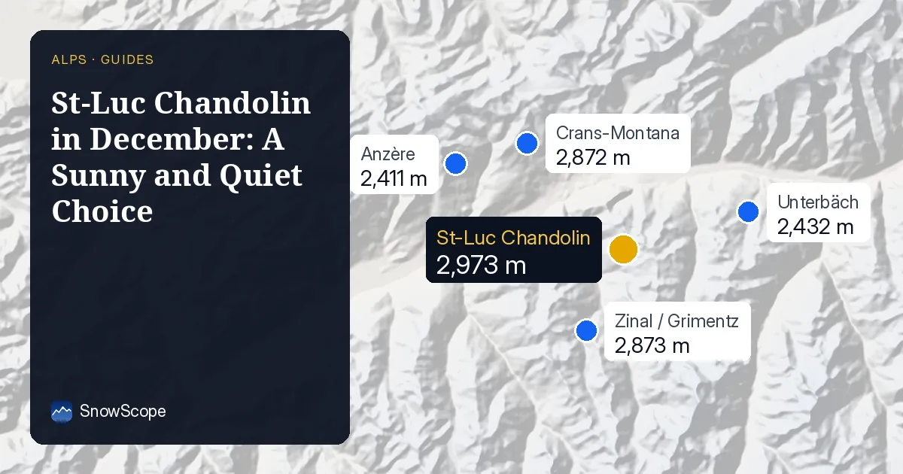

St-Luc Chandolin in December: A Sunny and Quiet Choice
St-Luc Chandolin is a peaceful destination for a winter getaway in the Val d'Anniviers. It offers a relaxed atmosphere and very reliable snow at high altitudes for a December trip.
See the live snow forecast for St-Luc Chandolin in the SnowScope appSnow depth, powder alerts and the 3D map, free.
A sunny balcony in the mountains
St-Luc Chandolin is a place where we can really slow down and enjoy the mountains. The mapped ski area has 56 km of runs and 18 mapped lifts. This provides plenty of variety for a quiet week of exploring. It is a sunny spot in the Valais region. People often call it a balcony because it sits high above the valley floor.
The lowest lift starts at 1682 m and the highest lift goes up to 2973 m, a vertical of 1291 m. The area is smaller than the famous Valais names, and that is exactly why it suits a couple who want a calm week.

What to expect from the December snow
We looked closely at our snow history of 46 past winters to see what December usually looks like. At the top of the lifts, which is 2973 m high, the usual December depth is 110 cm. This is very reliable for early season skiing. In fact, between 15-21 December and 22-28 December, the top has had 30 cm or more in 100 % of past winters.
Mid-mountain at 2327 m is also very steady. The usual December depth there is 57 cm. However, the bottom of the lifts at 1682 m can be a bit thinner early in the month. The usual depth at the base is 38 cm for the whole of December. In a thin winter, which happens about 1 winter in 10, the base depth can be below 18 cm. If you want more snow at the base, the share of winters with 30 cm or more rises from 41 % in the first week of December to 85 % in the last week. For those looking for deeper snow, the mid-mountain has 50 cm or more in 78 % of winters during the final week of the month.
Checking the holiday costs
Planning a trip to Switzerland can be expensive, but this area feels like a better deal than the big names. We checked the official site for the winter 2026-27 prices to be sure. An adult 1-day Val d'Anniviers pass costs CHF 75.00. This pass is quite flexible because it covers St-Luc Chandolin, Grimentz-Zinal, and Vercorin.
If you are staying for a full week, an adult 6-day Val d'Anniviers pass costs CHF 339.00. One pass for the whole valley makes it easy to change slopes when you want a different view.
Comparing with Grimentz-Zinal
It is helpful to compare this resort with its neighbour, Grimentz-Zinal. That resort is slightly larger. The mapped ski area there has 71 km of runs and 23 mapped lifts. Grimentz-Zinal has a lower base at 1552 m, where the usual December depth is 27 cm. This is lower than the 38 cm usual depth at the St-Luc Chandolin base of 1682 m.
At the top of the lifts, Grimentz-Zinal reaches 2873 m with a usual depth of 99 cm. St-Luc Chandolin is higher at 2973 m and usually has more snow at the top with 110 cm. Grimentz-Zinal offers a slightly larger vertical drop of 1321 m compared to 1291 m here. Both resorts share the same lift pass prices. Your choice depends on whether you want the extra runs of Grimentz-Zinal or the higher and sunnier slopes of St-Luc Chandolin.
A steady trend for the future
One thing we found interesting in our snow history is how steady the snow has been. At the mid-mountain height of 2327 m, the average depth in December was 54 cm during the first 15 winters from 1980-81 to 1994-95. In the last 15 winters from 2011-12 to 2025-26, the average was exactly the same at 54 cm. This flat trend is very reassuring for planning a trip. Even at the base of 1682 m, the average was 38 cm in both the first 15 winters and the last 15 winters. At the top, the average went from 111 cm in the first period to 99 cm in the last period.
Right now, the season is just starting. On 13 November 2026, the snow depth is 0 cm at the base and 5 cm at mid-mountain. At the top, it is 1 cm. The two-week outlook for mid-mountain and above shows a range of 60 cm to 104 cm of new snow. This is a promising start for the coming month.
Tips for skiers
- Aim for the week of 22-28 December if you want the best chance of snow at the base, as it has 30 cm or more in 85 % of past winters.
- Spend most of your time above the mid-mountain height of 2327 m where the usual December depth is 57 cm.
- Always check the avalanche bulletin before you think about leaving the marked runs.
- Buy your adult 6-day Val d'Anniviers pass for CHF 339.00 on the official site to cover the whole valley.
- Look for the deepest snow at the top of the lifts at 2973 m, where the usual depth on 15 December is 109 cm.
More maps (external sites)
References and credits
- Val d'Anniviers tourism, official ski pass prices 2026-27 www.valdanniviers.ch/fr/Z33617/tarifs-ski-grimentz-zinal
- SnowScope, December snow at three heights and today's snow map snowscope.app/
About these numbers
Snow numbers: SnowScope snow history, 46 past winters (1980-81 to 2025-26) at three heights of each resort (a model of the past corrected for height: an estimate for an area, not resort measurements); December figures computed from the daily depths of those winters. Snow now and the two-week outlook: SnowScope forecasts (outlook from ECMWF and GFS, a range, not a promise). Lifts and runs: OpenSkiMap mapping. Prices: the official resort pages listed below, read on 2026-11-13; prices can change, check before booking.
Official avalanche bulletins: SLF – WSL Institute for Snow and Avalanche Research
Cite this report
For research, teaching or the press: the numbers and charts are free to reuse under CC BY 4.0 with this citation.
SnowScope (2026), St-Luc Chandolin in December: A Sunny and Quiet Choice, https://snowscope.app/blog/en/2026/11/st-luc-chandolin-december-ski-quiet-value-valais-2026.html, accessed 2026-11-14
SnowScope (Atlas Labs). (2026, November 14). St-Luc Chandolin in December: A Sunny and Quiet Choice. SnowScope snow reports. https://snowscope.app/blog/en/2026/11/st-luc-chandolin-december-ski-quiet-value-valais-2026.html
BibTeX
@misc{snowscope2026stlucchandolindecembersk,
author = {{SnowScope (Atlas Labs)}},
title = {St-Luc Chandolin in December: A Sunny and Quiet Choice},
year = {2026},
month = nov,
howpublished = {\url{https://snowscope.app/blog/en/2026/11/st-luc-chandolin-december-ski-quiet-value-valais-2026.html}},
note = {Published 2026-11-14 13:29 UTC; accessed 2026-11-14}
}· CC BY 4.0 · Methods, data and tools →
St-Luc Chandolin: snow and temperature by height, this winter vs last (tools) →
Follow St-Luc Chandolin
Free: a message when fresh snow is coming, and the forecast every morning.
More snow reports

Silvretta Montafon snow conditions on 13 November 2026: 4.5 cm on the top at 2421 m, bare mid-mountain and valley, about 40 cm on the way up high this week while the valley gets rain below 1,500 m.

Three ways to spend a day from Méribel: east to Courchevel, south towards Val Thorens, or at home on Mont Vallon, with the snow of 46 past winters at three heights.

Les Menuires snow report for 13 November 2026: 28 cm at the top (2838 m), none lying at 2112 m or 1386 m. About 80 cm due at the top in seven days, snow line around 1500 to 1700 m. Why Val Thorens, 450 m higher up the same valley, already has more.